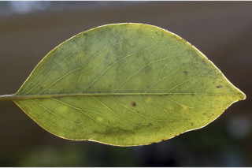
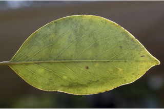
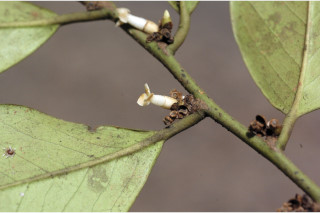
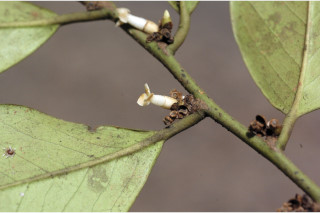

Trees up to 25 m tall.
25 ಮೀ. ಎತ್ತರದವರೆಗೆ ಬೆಳೆಯುವ ಮರಗಳು.
25 മീറ്റര്വരെ ഉയരത്തില് വളരുന്ന മരങ്ങള്.
மரம், 25 மீ. உயரம் வரை வளரக்கூடியது
Bark blackish brown, flakes; blaze brown.
ತೊಗಟೆ ಕಪ್ಪು ಮಿಶ್ರಿತ ಕಂದು ಬಣ್ಣದಲ್ಲಿದ್ದು ಚಕ್ಕೆರೂಪದಲ್ಲಿರುತ್ತದೆ; ಕಚ್ಚು ಮಾಡಿದ ಜಾಗ ಕಂದು ಬಣ್ಣದಲ್ಲಿರುತ್ತದೆ..
അടര്ന്നിളകുന്ന, കറുപ്പ്കലര്ന്ന തവിട്ട് നിറത്തിലുളള പുറംതൊലി; വെട്ടുപാടിന് തവിട്ട്നിറം.
மரத்தின் பட்டை கருப்பு கலந்த அரக்கு நிறமுடையது, பட்டை வெடிப்புகளுடையது; உள்பட்டை அரக்கு நிறமுடையது.
Branchlets terete, fulvous pubescent when young.
ಕಿರುಕೊಂಬೆಗಳು ದುಂಡಾಗಿದ್ದು ಎಳೆಯದಾಗಿದ್ದಾಗ ನಸುಗೆಂಪಿನಿಂದ ಕೂಡಿದ ಹಳದಿ ಬಣ್ಣವುಳ್ಳ ಮೃದುತುಪ್ಪಳದಿಂದ ಕೂಡಿರುತ್ತವೆ
ഇളതായിരിക്കുമ്പോള്, ഫള്വസ് രോമിലമായ, ഉരുണ്ട ഉപശാഖകള്.
சிறிய நுனிக்கிளைகள் குறுக்குவெட்டுத் தோற்றத்தில் வளையமானது, புதிய சிறு நுனிக்கிளைகளில் மென்உரோமங்களுடையது.
Leaves simple, alternate, distichous; petiole to 0.6-1.1 cm long, planoconvex in cross section, glabrous; lamina 5-12 x 3-7.5 cm, narrow ovate to ovate, apex acute to acuminate with blunt tip, base acute, margin entire, coriaceous, glabrous, drying brown; midrib flat above; secondary_nerves 5-8, not prominent, lower most pairs close; tertiary_nerves obscure.
ಎಲೆಗಳು ಸರಳವಾಗಿದ್ದು ಪರ್ಯಾಯ ಹಾಗೂ ಸುತ್ತು ಜೋಡನಾ ವ್ಯವಸ್ಥೆ ಯಲ್ಲಿದ್ದು ಕಾಂಡದ ಎರಡೂ ಕಡೆಯ ಎದುರು ಬದರಿನ ಸಾಲಿನಲ್ಲಿರುತ್ತವೆ; ಎಲೆ ತೊಟ್ಟುಗಳು 0.6 -1.0 ಸೆಂಮೀ.ಉದ್ದವಿದ್ದು ಅಡ್ಡ ಸೀಳಿದಾಗ ಸಪಾಟ ಪೀನ ಮಧ್ಯದ ಆಕಾರದಲ್ಲಿ ಇರುತ್ತವೆ ಹಾಗೂ ರೋಮರಹಿತವಾಗಿರುತ್ತವೆ; ಪತ್ರಗಳು 5 – 12 X 3 – 7.5 ಸೆಂ.ಮೀ. ಗಾತ್ರ, ಸಂಕುಚಿತ-ಅಂಡಾಕಾರದಿಂದ ಅಂಡಾಕಾರದ ಆಕಾರ ಹೊಂದಿದ್ದು, ಮೊಂಡಾದ ಅಗ್ರವುಳ್ಳ ಚೂಪಾದ ಅಥವಾ ಕ್ರಮೇಣ ಚೂಪಾಗುವ ತುದಿ ; ಚೂಪಾದ ಬುಡ, ನಯವಾದ ಅಂಚು, ತೊಗಲವನ್ನೋಲುವ ಮೇಲ್ಮೈ ಹೊಂದಿದ್ದು, ರೋಮರಹಿತವಾಗಿರುತ್ತವೆ ಹಾಗೂ ಒಣಗಿದಾಗ ಕಂದು ಬಣ್ಣದಲ್ಲಿರುತ್ತವೆ; ಮಧ್ಯನಾಳ ಪತ್ರದ ಮೇಲ್ಭಾಗದಲ್ಲಿ ಚಪ್ಪಟೆಯಾಗಿರುತ್ತದೆ;ಎರಡನೇ ದರ್ಜೆಯ ನಾಳಗಳು ಪ್ರಮುಖವಾಗಿ ಕಾಣದ ಅಂದಾಜು 5-8 ಜೋಡಿಗಳಿರುತ್ತವೆ, ತೀರಾ ತಳಗಿನ ನಾಳಗಳು ಸನಿಹದಲ್ಲಿರುತ್ತವೆ; ಮೂರನೇ ದರ್ಜೆಯ ನಾಳಗಳು ಅಸ್ಪಷ್ಟ.
ലഘുവായ ഇലകള്, ഏകാന്തരമായി, തണ്ടിന്റെ രണ്ടുഭാഗത്തുമാത്രയടുക്കിയ വിധത്തിലാണ്; അരോമിലമായ, 0.6 സെ.മീ മുതല് 1.1 സെ.മീ വരെ നീളമുളള ഇലഞെട്ടിന്, ഛേദത്തില് ഒരുഭാഗം പരന്നും മറുഭാഗം ഉരുണ്ടുമിരിക്കുന്ന ഘടനയാണ്; പത്രഫലകത്തിന് 5 സെ.മീ മുതല് 12 സെ.മീ വരെ നീളവും 3 സെ.മീ മുതല് 7.5 സെ.മീ വരെ വീതിയും ആകൃതി വീതികുറഞ്ഞ അണ്ഡാകാരം തൊട്ട് അണ്ഡാകാരം വരെയാകാം, മുനപ്പില്ലാത്ത അറ്റത്തോടുകൂടിയ, നിശിതാഗ്രമോ ദീര്ഘാഗ്രമോ ആണ്, പത്രാധാരം നിശിതമാണ്, അരികുകള് അവിഭജിതം, ചര്മ്മില പ്രകൃതം, അരോമിലം, ഉണങ്ങുമ്പോള് തവിട്ട് നിറം; മുഖ്യസിര മുകളില് പരന്നതാണ്; അത്രപ്രകടമല്ലാത്ത 5 മുതല് 8 വരെ ജോഡി ദ്വിതീയ ഞരമ്പുകള്, കീഴറ്റത്തെ ജോഡി അടുത്താണ്; ത്രിതീയ ഞരമ്പുകള് അപ്രസ്രക്തമാണ്.
இலைகள் தனித்தவை, மாற்றுஅடுக்கமானவை, இருநெடுக்கு வரிசையிலையடுக்கம் (டைஸ்டிக்கஸ்); இலைக்காம்பு 0.6-1.1 செ.மீ. நீளமானது, குறுக்குவெட்டுத் தோற்றத்தில் பிளேனோகான்வக்ஸ், உரோமங்களற்றது; இலை அலகு 5-12 X 3-7.5 செ.மீ., குறுகிய முட்டை வடிவம் முதல் முட்டை வடிவம், அலகின் நுனி கூரியது முதல் வால் போன்று நீண்டு மழுங்கியது, அலகின் தளம் கூரியது அலகின் விளிம்பு முழுமையானது, கோரியேசியஸ், உரோமங்களற்றது; காய்ந்த இலைகள் அரக்கு நிறமுடையது; மையநரம்பு மேற்பரப்பில் அலகின் பரப்பிற்கு சமமானது; இரண்டாம் நிலை நரம்புகள் 5-8 ஜோடிகள், தெளிவற்றது, தளத்திலுள்ள உள்ள நரம்புகள் நெருக்கமானவை; மூன்றாம் நிலை நரம்புகள் தெளிவற்றது.
Flowers unisexual, dioecious; male flowers in axillary sessile clusters, cream; female flowers 1-3, axillary.
ಹೂಗಳು ಏಕ ಲಿಂಗಿಗಳಾಗಿದ್ದು ಪ್ರತ್ಯೇಕ ಸಸ್ಯಗಳಲ್ಲಿರುತ್ತವೆ; ಗಂಡು ಹೂಗಳು ಕೆನೆ ಬಣ್ಣದಲ್ಲಿದ್ದು ಅಕ್ಷಾಕಂಕುಳಿನಲ್ಲಿನ ತೊಟ್ಟುರಹಿತವಾದ ಗುಚ್ಛಗಳಲ್ಲಿರುತ್ತವೆ; ಒಂದರಿಂದ ಮೂರು ಹೆಣ್ಣು ಹೂಗಳು ಅಕ್ಷಾಕಂಕುಳಿನಲ್ಲಿರುತ್ತವೆ.
പൂക്കള് ഏകലിംഗികളാണ്, ഡയീഷ്യസും; ക്രീം നിറത്തിലുളള ആണ്പൂക്കള്, കക്ഷീയ, അവൃന്ത കൂട്ടങ്ങളായുണ്ടാകുന്നു; പെണ്പൂക്കള്, കക്ഷങ്ങളില് 1 മുതല് 3 എണ്ണം വരെ ഒന്നിച്ചുണ്ടാകുന്നു.
ஓர்பால் மலர்கள், ஈரகம் கொண்டவை (டையிசியஸ்); ஆண்மலர்கள் இலைக்கோணங்களில் காம்பற்று கொத்தாக காணப்படும், கிரீம் நிறமுடையது; பெண்மலர்கள் 1-3, இலைக்கோண மொட்டில் மலர்கள் தோன்றும்.
Berry, oblong-ovoid, 2.3 x 3.5 cm, rugose; calyx_persistent; 1-seed per cell.
ಬೆರ್ರಿಗಳು ಚತುರಸ್ರ – ಅಂಡಾಕಾರದಲ್ಲಿದ್ದು, 2.3 X 3.5 ಸೆಂ.ಮೀ. ಗಾತ್ರ, ಸುಕ್ಕು- ಸುಕ್ಕಾದ ಮೇಲ್ಮೈ ಹೊಂದಿದ್ದು ದೃಢವಾಗಿ ಉಳಿಯುವ ಪುಷ್ಪಪಾತ್ರೆ ಸಮೇತವಿರುತ್ತದೆ.ಬೀಜಗಳು ಕೋಶಕ್ಕೊಂದು ಇರುತ್ತದೆ.
ഉറച്ചുനില്ക്കുന്ന ബാഹ്യദളത്തോടുകൂടിയ കായ, ഓരോ അറയിലും ഒറ്റ വിത്തുളളതും, റൂഗോസ് രോമിലമായ, 2.3 സെ.മീ നീളവും 3.5 സെ.മീ വീതിയുമുളള, ആയത-അണ്ഡാകാര ബെറിയാണ്.
முழுச்சதைகனி (பெர்ரி), நீள்சதுரம்-முட்டை வடிவமுடையது, 2.3 X 3.5 செ.மீ. சுருங்கியவை (ரூக்கோஸ்), உதிராத நிரந்தரமான புல்லி இதழ்களுடையது, ஒவ்வொரு அறையிலும் ஒரு விதை காணப்படும்.


 


 
